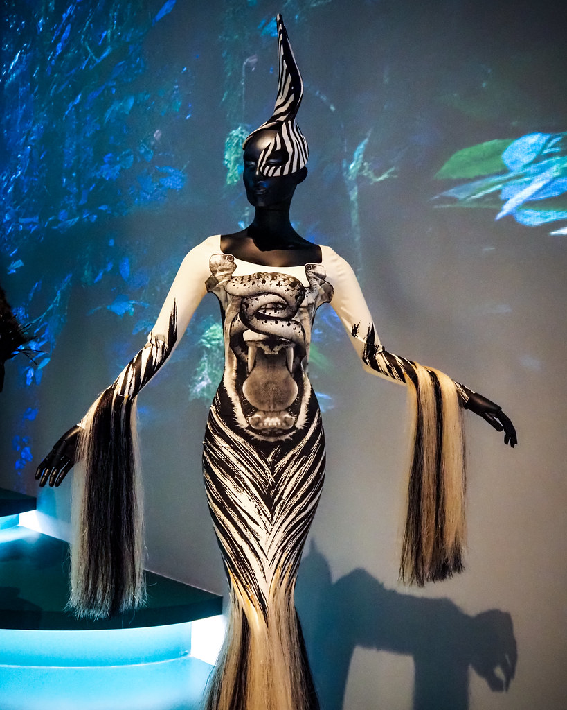

Dự án mẫu 01 / Bộ sưu tập cá nhân
Nocturne Archive
- Năm
- 2025
- Vai trò
- Nhà thiết kế
- Loại
- Bộ sưu tập
Mục tiêu sáng tạo: để cơ thể gợi dáng một loài thú mà không dùng một chi tiết hóa trang nào.
Bộ capsule dạ hội mười hai mẫu, họa tiết in theo bản đồ cơ thể và tay áo kéo dài. Sọc chạy theo đường may, để họa tiết và đường cắt cùng kể một câu chuyện.
- Chất liệu
- Crepe co giãn in họa tiết, tua lông đuôi ngựa, lót jersey mờ
- Kỹ thuật
- Đặt họa tiết theo rập, draping trên ma-nơ-canh, viền gấu khâu tay
- Moodboard
- Ảnh chụp đêm, hoa văn da ngựa vằn, các show couture thập niên 1990
- Trạng thái
- Dự án cá nhân, mục mẫu